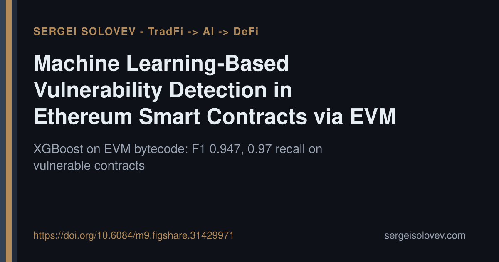

Most on-chain vulnerability scanners require source code or ABI. That constraint silently excludes the majority of deployed contracts, where neither is publicly available. The question worth asking: can bytecode alone carry enough signal for reliable vulnerability classification at scale?
In this work, I built a feature engineering pipeline that extracts 65 numerical features directly from disassembled EVM bytecode — covering reentrancy patterns, arithmetic overflow indicators, gas-based denial-of-service risks, access control anomalies, and environmental dependencies. No source code, no ABI. The pipeline was evaluated on 117,091 real-world Ethereum contracts labelled by the Slither static analyser, using four classifiers under stratified 5-fold cross-validation.
XGBoost, tuned via Bayesian search with Optuna over 50 trials, reached an F1-score of 0.947 on cross-validation and 93% accuracy on the held-out set, with 0.97 recall on vulnerable contracts. The comparison against n-gram opcode vectorisation is instructive: hand-crafted numerical features substantially outperformed text-based sequence representations, which suggests that domain-informed feature design still matters more than representation scale for this task.
Practically, this means a lightweight screening layer becomes viable for large contract repositories without incurring the cost of symbolic execution on every target.
Full paper and code: https://doi.org/10.6084/m9.figshare.31429971
#SmartContracts #DeFi #ML